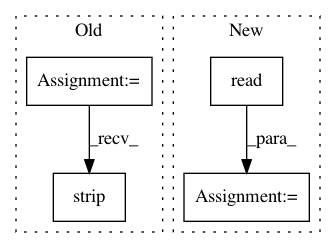

6ea0b2b297af473ac73b98938f561a06b63a6bd9,binding/python/setup.py,,,#,6
Before Change
shutil.copy(os.path.join(os.path.dirname(__file__), "../../LICENSE"), package_folder)
INIT_SCRIPT =
from .binding.python.porcupine import Porcupine
from .resources.util.python import *
def create(library_path=None, model_file_path=None, keyword_file_paths=None, keywords=None, sensitivities=None):
\
Factory method for Porcupine.
:param library_path: Path to Porcupine"s dynamic library. If not set it will be set to the default location.
:param model_file_path: Path to Porcupine"s model parameters file. If not set it will be set to the default
location.
:param keyword_file_paths: List of absolute paths to keywords files. If not set it will be populated from
"keywords" argument.
:param keywords: List of keywords to be used with Porcupine. The list of available (default) keywords can be
retrieved using "pvporcupine.KEYWORDS".
:param sensitivities: List of sensitivity values for each keyword. If not set "0.5" will be used for all keywords.
:return: An instance of Porcupine wake word engine.
\
if library_path is None:
library_path = LIBRARY_PATH
if model_file_path is None:
model_file_path = MODEL_FILE_PATH
if keyword_file_paths is None:
if keywords is None:
raise ValueError(""keywords" or "keyword_file_paths" must be set")
if all(x in KEYWORDS for x in keywords):
keyword_file_paths = [KEYWORD_FILE_PATHS[x] for x in keywords]
else:
raise ValueError(
"one or more keywords are not available by default. available keywords are:\\n%s" % ", ".join(KEYWORDS))
if sensitivities is None:
sensitivities = [0.5] * len(keyword_file_paths)
if len(sensitivities) != len(keyword_file_paths):
raise ValueError(""sensitivities" and "keyword_file_paths" should have the same length")
return Porcupine(
library_path=library_path,
model_file_path=model_file_path,
keyword_file_paths=keyword_file_paths,
sensitivities=sensitivities)
with open(os.path.join(package_folder, "__init__.py"), "w") as f:
f.write(INIT_SCRIPT.strip("\n "))
f.write("\n")
MANIFEST_IN =
After Change
f.write(MANIFEST_IN.strip("\n "))
with open(os.path.join(os.path.dirname(__file__), "README.md"), "r") as f:
long_description = f.read()
setuptools.setup(
name="pvporcupine",
version="1.8.6",
In pattern: SUPERPATTERN
Frequency: 4
Non-data size: 4
Instances
Project Name: Picovoice/porcupine
Commit Name: 6ea0b2b297af473ac73b98938f561a06b63a6bd9
Time: 2020-10-01
Author: alireza@picovoice.ai
File Name: binding/python/setup.py
Class Name:
Method Name:
Project Name: Picovoice/porcupine
Commit Name: 6ea0b2b297af473ac73b98938f561a06b63a6bd9
Time: 2020-10-01
Author: alireza@picovoice.ai
File Name: demo/python/setup.py
Class Name:
Method Name:
Project Name: streamlit/streamlit
Commit Name: 4156d3448d652a825ead6cc9fb12c6cc9daf2193
Time: 2018-10-10
Author: thiagot@gmail.com
File Name: lib/streamlit/proxy/Proxy.py
Class Name:
Method Name: get_external_ip
Project Name: streamlit/streamlit
Commit Name: da2f70f098236131c7c3e6145417110c08a07947
Time: 2018-10-12
Author: thiagot@gmail.com
File Name: lib/streamlit/proxy/Proxy.py
Class Name:
Method Name: get_external_ip